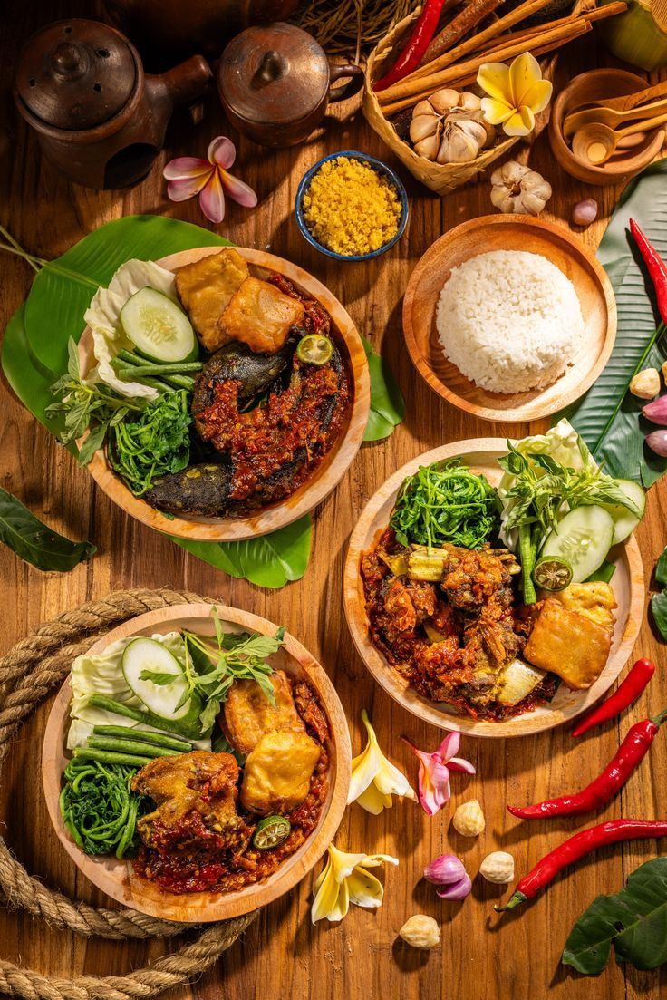

Informasi dalam Satu Tempat
Menyajikan berbagai pilihan kuliner agar pengguna tidak perlu mencari referensi dari banyak tempat.
TENTANG RASA LOKAL / 01
Setiap kuliner punya cerita. Kami hadir untuk membantumu menemukan cerita itu, satu rasa dalam satu waktu.
Rasa Lokal merupakan website direktori kuliner yang menyajikan informasi berbagai makanan dan minuman agar lebih mudah dijelajahi.

FIG. 01 — FOOD & CULTURECERITA DI BALIK RASA / 02
Mencari referensi makanan terkadang membutuhkan waktu karena informasi tersebar di berbagai tempat. Dari kebutuhan tersebut, Rasa Lokal hadir sebagai tempat untuk menjelajahi pilihan kuliner dengan lebih praktis.
Kami mengumpulkan informasi kuliner dalam satu website sehingga pengguna dapat mengenal berbagai pilihan makanan dan minuman, melihat informasi yang tersedia, serta menemukan inspirasi sesuai selera.
Karena menemukan makanan favorit juga bisa menjadi bagian menyenangkan dari sebuah perjalanan.
APA YANG KAMI HADIRKAN / 03
Rasa Lokal dirancang untuk menjadi referensi kuliner yang sederhana, informatif, dan mudah digunakan.
Menyajikan berbagai pilihan kuliner agar pengguna tidak perlu mencari referensi dari banyak tempat.
Membantu pengguna menjelajahi kuliner berdasarkan kategori dan informasi yang tersedia.
Membuka kesempatan untuk mengenal beragam hidangan dan menemukan pilihan yang belum pernah dicoba.
SAMPAI JUMPA DI PETUALANGAN RASA BERIKUTNYA